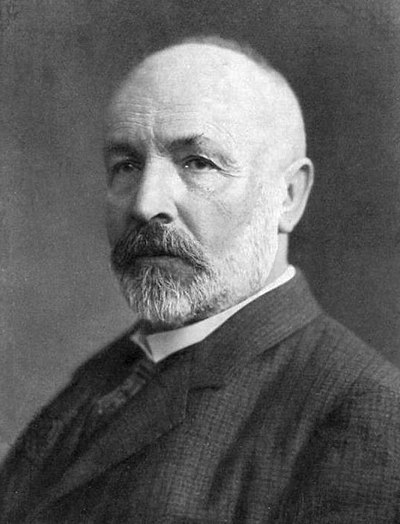

Oneindigheid#
Oneindig soorten oneindigheid!

Of in ieder geval twee…
Programma’s berekenen functies#
wordt
def f(x):
return 2*x
Ander voorbeeld#
wordt
def f(x):
return x % 2
Hoeveel functies zijn er?#
Kan je voor elke functie een programma schrijven?
Zijn er meer functies dan programma’s?
Zijn er meer programma’s dan functies?
Er zijn oneindig veel functies#
We bekijken nu even alleen functies die een positieve
intals invoer krijgen en0of1als uitvoer geven (dus beslissingsproblemen)
Waarom zijn er hier oneindig veel van?
Kijk maar:
Maar dit kan natuurlijk voor elk getal, niet alleen 1, en er zijn oneindig veel getallen
Er zijn oneindig veel programma’s#
We tellen alle programma’s, ook met syntaxfouten
Twee programma’s die er anders uitzien maar hetzelfde berekenen tellen allebei
def f(x):
return 1
def g(x):
return x % 2
def h(x):
return x in [1, 2, 3]
Hier zijn er ook oneindig veel van:
def f(x):
return x == 1
Dit kan natuurlijk ook voor elk getal, niet alleen voor 1
We doen even alsof de computer oneindig veel geheugen heeft
Er zijn meer functies dan programma’s#
Maar ze zijn allebei oneindig?
Toch zijn er meer functies!
Programma’s “lijken” op natuurlijke getallen#
Natuurlijke getallen zijn integers die niet negatief zijn.
Bij elk programma “hoort” een integer.
Bij elke integer “hoort” een programma.
Maar misschien geen programma zonder syntaxfouten!
Dit is waar, maar waarom?
Een programma is een string
Een string is niet anders dan een aantal bits achter elkaar
Maar een aantal bits achter elkaar is ook een integer!
def program_to_int(p):
if p == '': return 0
return 256 * program_to_int(p[:-1]) + ord(p[-1])
def int_to_program(i):
if i <= 0: return ''
return int_to_program(i // 256) + chr(i % 256)
Functies “lijken” op reële getallen#
Reële getallen zijn kommagetallen
We beperken ons hier tot getallen van 0 tot 1
En tot beslissingsproblemen
Bij elk beslissingsprobleem “hoort” een kommagetal
Bij elk kommagetal “hoort” een beslissingsprobleem
Dit is waar, maar waarom?
We schrijven de kommagetallen even binair
Bijvoorbeeld: \(0{,}375_{10} = 0{,}011_2\) (want: \(0{,}375 = \frac{1}{4} + \frac{1}{8} = \frac{0}{2^1} + \frac{1}{2^2} + \frac{1}{2^3}\))
Meer integers of meer kommagetallen?#
Er zijn meer kommagetallen dan integers
Maar ze zijn allebei oneindig?
Niet alle oneindigheden zijn gelijk!
Bijecties#
Twee verzamelingen (bijvoorbeeld programma’s en integers) zijn even groot als je een één-op-éénrelatie kan vinden tussen de twee verzamelingen
Dit heet een bijectie.
Bijvoorbeeld: er zijn even veel positieve, even integers (2, 4, 6, …) en positieve integers (1, 2, 3, …).
def even_to_positive(e):
return e // 2
def positive_to_even(p):
return p * 2
Zie ook deze TED-Ed-video van Jeff Dekofsky over Hilbert’s hotel, waar je ook bijecties tussen oneindige verzamelingen ziet.
Er zijn ook even veel integers (dus positief en negatief: …, -3, -2, 1, 0, 1, 2, 3, …) als positieve integers (1, 2, 3, …)
def integer_to_positive(i):
if i < 0:
return -i * 2
else:
return i * 2 + 1
def positive_to_integer(p):
if p % 2 == 1:
return p // 2
else:
return -p // 2
Positieve integers en reële getallen#
Kunnen we een bijectie vinden tussen de positieve integers en de reële getallen van 0 tot 1?
Dus: kunnen we alle reële getallen in een lijst zetten?
Waarom is dit geen bijectie?
Aan de ene kant wordt het getal \(0{,}1\) op 1 afgebeeld, maar ook op 10 (immers, \(0{,}10 = 0{,}1\)), maar belangrijker, getallen als \(\frac{1}{9} = 0,1111\ldots\) worden helemaal niet afgebeeld: dan zou je een integer moeten hebben met een oneindig aantal getallen, maar die bestaan niet. Integers worden wel oneindig groot, maar elke integer kan je schrijven met een eindig aantal cijfers.
Cantor’s diagonaalargument#
Georg Cantor bewees dat, hoe je je lijst ook maakt, er altijd reële getallen missen!
Maak een nieuw getal waarbij op de eerste plek een ander cijfer staat dan bij getal 1, op de tweede plek een ander cijfer staat dan bij getal 2, enzovoorts.
Bijvoorbeeld \(0{,}4350\ldots\).
Dit getal kan niet op de lijst staan!
De lijst is dus niet volledig.
Zie ook deze video van Numberphile over het diagonaalargument van Cantor.
Aftelbaar en overaftelbaar#
Er zijn dus echt meer reële getallen dan integers.
Integers noemen we aftelbaar.
Reële getallen noemen we overaftelbaar.
Dus: er zijn beslissingsproblemen die we niet in een programma kunnen vatten!
Ongeacht wat voor computer we zouden kunnen bedenken.
“Complexiteit” van getallen#
Een voorbeeld van een functie die je niet kan berekenen.
Hoe complex is een getal?
1000000…0000000000000
1742763…6352816281535
Deze twee getallen zijn even lang, maar welke oogt complexer?
Laten we “complexiteit” definiëren als de lengte van de kortste functie dat dat getal kan berekenen.
Dit wordt wel Kolmogorov-complexiteit genoemd
Een functie voor Kolmogorov-complexiteit#

complexity(x): complexiteit vanxBijvoorbeeld:
complexity(42) == 18Omdat
def f(): return 42de kortste functie is om42te maken16 tekens “overhead”, 2 voor het getal
Dit is niet helemaal waar: je kan functies korter schrijven in Python, maar daar heb je syntax voor nodig die we niet besproken hebben, dus we doen even alsof die syntax niet bestaat.
Dus in ieder geval kan 16 plus de lengte van het getal
Maar soms kan dit beter:
complexity(100000) == 21Omdat
def f(): return 10**5de korste functie is om100000te maken
Quiz#
complexity(42) == 16 + 2 == 18complexity(9001) == 16 + ?complexity(1000000) == 16 + ?(een miljoen; 6 nullen)complexity(1000042) == 16 + ?complexity(1000000000) == 16 + ?(een miljard; 9 nullen)complexity(100000000...) == 16 + ?(een googol; 100 nullen)complexity(100000000000...) == 16 + ?(een googolplex; googol nullen)complexity(31415926...) == 16 + ?(een biljoen cijfers van π)complexity(74682437...) == 16 + ?(duizend willekeurige cijfers)
Oplossingen#
complexity(42) == 16 + 2 == 18complexity(9001) == 16 + 4 == 20complexity(1000000) == 16 + 5 == 21:10**6(een miljoen; 6 nullen)complexity(1000042) == 16 + 7 == 23:10**6+42is langer dan1000042complexity(1000000000) == 16 + 5 == 21:10**9(een miljard; 9 nullen)complexity(100000000...) == 16 + 7 == 23:10**100(een googol; 100 nullen)complexity(100000000000...) == 16 + 11 == 27:10**10**100(een googolplex; googol nullen)complexity(31415926...) == 16 + 108 == 124(een biljoen cijfers van π)complexity(74682437...) == 16 + 1000 == 1016(duizend willekeurige cijfers)
Waarom is complexity(31415926...) == 124? Zie deze voorbeeldcode:
def f(): a=10**10**100;from random import uniform as u;return 10**10**9*4*sum(u(-1,1)**2+u(-1,1)**2<=1 for _ in range(a))//a
Dit is een gecomprimeerde versie van de functie for_pi die je eerdr geschreven hebt.
Is deze functie berekenbaar?#
De functie is duidelijk beschreven en heeft duidelijke invoer en uitvoer
Maar niet berekenbaar! Elke implementatie bevat een bug
We weten dat
complexity(5) == 17, dus poging 1:
def complexity(x):
return x + 12
Zitten hier bugs in?
Bijvoorbeeld
complexity(42) == 18 != 54(en natuurlijk een heleboel andere bugs)
Poging 2#
Laten we kijken naar de lengte:
def complexity(x):
return x + len(str(x))
Zitten hier bugs in?
Bijvoorbeeld
complexity(100000) == 21 != 22(en ook hier een heleboel andere bugs)
Sterker nog, elke functie die we hiervoor kunnen bedenken heeft een bug. Kijk maar:
def complexity(x):
# heel veel code: deze hele functie is bijvoorbeeld 900.000 tekens lang
return answer
De stelling is dat deze functie geen bugs heeft, dus voor alle getallen de goede complexiteit berekent.
def complexity(x):
# heel veel code: deze hele functie is bijvoorbeeld 900.000 tekens lang
return answer
def paradox():
x = 0
while complexity(x) < 1000000:
x += 1
return x
Deze functie is samen met
complexity900.087 tekens langDeze functie geeft een getal terug
Dit getal heeft dus een complexiteit die hooguit 900.087 is (dat was de definitie van complexiteit!)
Maar: de functie
complexityzegt dat de complexiteit van dit getal meer dan 1 miljoen is!De functie
complexityheeft dus een bug!Deze bewijsmethode heet bewijs uit het ongerijmde.
Het halting problem#
We willen weten of een bepaald programma in een eindeloze lus zal raken, of omgekeerd, of het programma zal stoppen
def halt_checker(f):
# bepaal of f() wel of niet stopt
Je voelt hem al aankomen: ook
halt_checkerheeft altijd een bug
Stel dat een functie
halt_checkervoor alle Pythonfuncties kan bepalen of ze al dan niet stoppenKunnen we dan een bewijs uit het ongerijmde vinden dat deze functie niet werkt?
def paradox():
if halt_checker(paradox):
while True:
print('Deze functie zou toch stoppen?')
else:
print('Deze functie zou toch niet stoppen?')
return 'Toch wel!'
Dus wat
halt_checker(paradox)ook teruggeeft, het klopt nooit!De functie
halt_checkerwerkt dus niet goed, ongeacht hoe die functie werkt.
Zie ook deze video van Computerphile over het halting problem.
Ben je er nog?#
Waarom is dit belangrijk?
Eindeloze lussen kunnen niet (altijd) herkend worden
Dus bugs zijn onvermijdelijk!
Ook bugs die geen eindeloze lussen zijn: dit volgt uit de Stelling van Rice
We kunnen dus geen programma schrijven om bugvrije code te produceren of te herkennen
Goed voor je baanzekerheid!